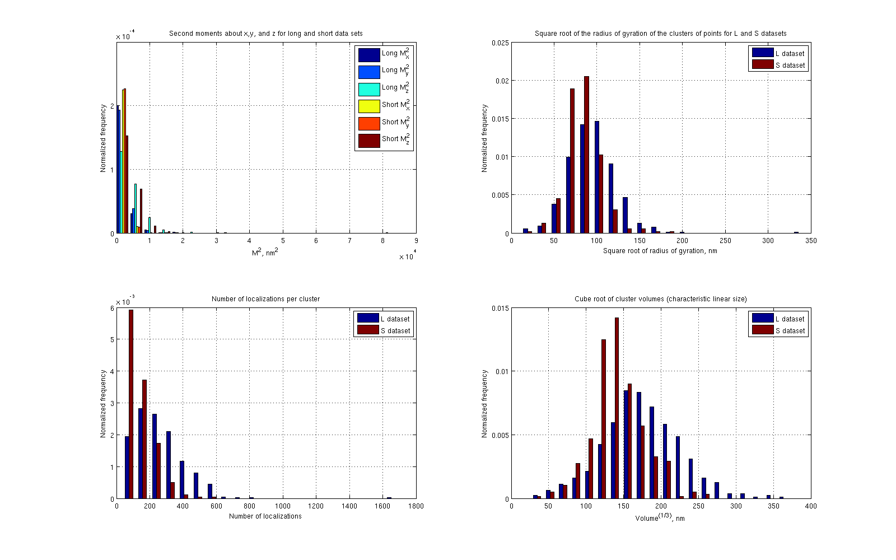
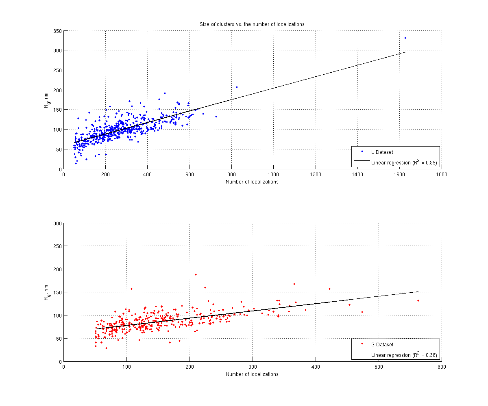
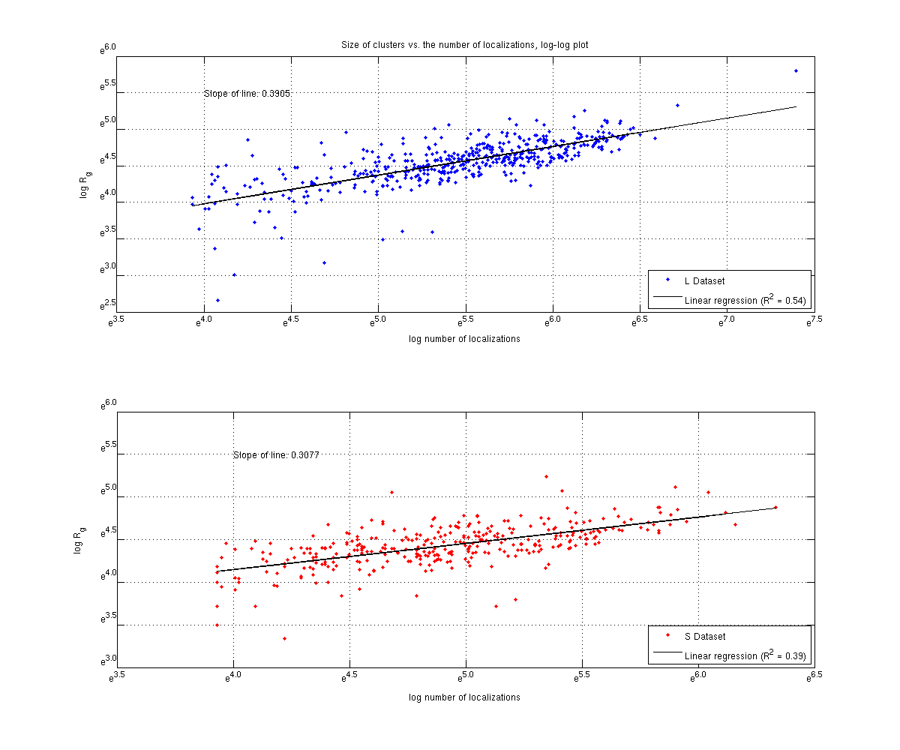
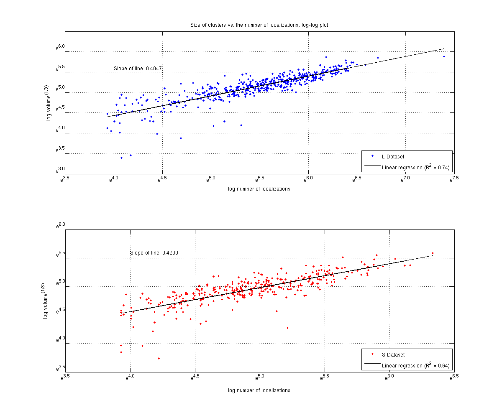

Contents
- Use parallel processing to speed up computation? (use 'false' if unsure)
- Define clustering and filtering parameters.
- Designate the files for analysis.
- Filter out upper level directors.
- Process the data within each file.
- Combine distrubtions from all elements of the data structures.
- Create the bins for plotting the distributions from above.
- Plot the normalized distributions of the cluster statistics.
- Plot square root of the radius of gyration vs number of localizations.
- Plot the number of localizations vs Rg in a log-log plot.
- Plot the number of localizations vs cube root of volume in a log-log plot.
- Report statistics from distributions.
% The main script for analyzing the telomere data and producing reports. % % This script should be run after the analysis workflow is determined from % data_mining.m. % % $AUTHOR: Kyle M. Douglass $ $DATE: 2014/08/13 $ $REVISION: 0.6 $ %
Use parallel processing to speed up computation? (use 'false' if unsure)
useParallel = true; if useParallel matlabpool open end
Warning: matlabpool will be removed in a future release. Use parpool instead. Starting matlabpool using the 'local' profile ... connected to 12 workers.
Define clustering and filtering parameters.
k - number of objects in a neighborhood of an object (minimal number of objects considered as a cluster) Eps - neighborhood radius, if not known avoid this parameter or put [] minLoc - Discard all clusters with localizations fewer than this number.
k = 8; Eps = 65; minLoc = 50;
Designate the files for analysis.
dataRootDir = '/mnt/LEBSRV/Michael-Kyle-Douglass/Telo2/29_07_2014_HelaS_L_SmchD1_KD_FISH/29_07_2014_HelaS_L_SmchD1_KD_FISH_Mol_lists/'; dataSetLDir = '29_07_2014_HelaL_SmchD1_pLVP042_mol_list/'; dataSetSDir = '29_07_2014_HelaS_SmchD1_pLVP042_mol_list/'; LFiles = dir([dataRootDir dataSetLDir]); SFiles = dir([dataRootDir dataSetSDir]);
Filter out upper level directors.
LFiles = LFiles(3:end); SFiles = SFiles(3:end);
Process the data within each file.
LProcData(length(LFiles),1).M1 = 0; LProcData(length(LFiles),1).M2 = 0; LProcData(length(LFiles),1).M2Mag = 0; LProcData(length(LFiles),1).numLoc = 0; LProcData(length(LFiles),1).volume = 0; SProcData(length(SFiles),1).M1 = 0; SProcData(length(SFiles),1).M2 = 0; SProcData(length(SFiles),1).M2Mag = 0; SProcData(length(SFiles),1).numLoc = 0; SProcData(length(SFiles),1).volume = 0; % process_data(fileName) is custom function call. if useParallel parfor ctr = 1:length(LFiles) LFileName = [dataRootDir dataSetLDir LFiles(ctr).name]; LData = tdfread(LFileName); LDataF = [LData.Xc LData.Yc LData.Zc]; LProcData(ctr) = process_data(LDataF, k, Eps, minLoc); end parfor ctr = 1:length(SFiles) SFileName = [dataRootDir dataSetSDir SFiles(ctr).name]; SData = tdfread(SFileName); SDataF = [SData.Xc SData.Yc SData.Zc]; SProcData(ctr) = process_data(SDataF, k, Eps, minLoc); end else for ctr = 1:length(LFiles) LFileName = [dataRootDir dataSetLDir LFiles(ctr).name]; LData = tdfread(LFileName); LDataF = [LData.Xc LData.Yc LData.Zc]; LProcData(ctr) = process_data(LDataF, k, Eps, minLoc); end for ctr = 1:length(SFiles) SFileName = [dataRootDir dataSetSDir SFiles(ctr).name]; SData = tdfread(SFileName); SDataF = [SData.Xc SData.Yc SData.Zc]; SProcData(ctr) = process_data(SDataF, k, Eps, minLoc); end end
Combine distrubtions from all elements of the data structures.
LAllData = struct('M1', [], 'M2', [], 'M2Mag', [], 'numLoc', [], 'volume', []); SAllData = struct('M1', [], 'M2', [], 'M2Mag', [], 'numLoc', [], 'volume', []); for ctr = 1:length(LFiles) LAllData.M1 = cat(1, LAllData.M1, LProcData(ctr).M1); LAllData.M2 = cat(1, LAllData.M2, LProcData(ctr).M2); LAllData.M2Mag = cat(1, LAllData.M2Mag, LProcData(ctr).M2Mag); LAllData.numLoc = cat(1, LAllData.numLoc, LProcData(ctr).numLoc); LAllData.volume = cat(1, LAllData.volume, LProcData(ctr).volume); end for ctr = 1:length(SFiles) SAllData.M1 = cat(1, SAllData.M1, SProcData(ctr).M1); SAllData.M2 = cat(1, SAllData.M2, SProcData(ctr).M2); SAllData.M2Mag = cat(1, SAllData.M2Mag, SProcData(ctr).M2Mag); SAllData.numLoc = cat(1, SAllData.numLoc, SProcData(ctr).numLoc); SAllData.volume = cat(1, SAllData.volume, SProcData(ctr).volume); end
Create the bins for plotting the distributions from above.
First, it is determined which of the two datasets, S or L, has the largest and smallest values in each field. Next, the bins are determined by partitioning the range between between these values into numBins equally-sized intervals. These bins are used to normalize the distributions.
numBins = 20; bins = struct('M1', [], 'M2', [], 'M2Mag', [], 'numLoc', [], 'volume', []); fields = fieldnames(bins); for ctr = 1:numel(fields) minBin = min([min(LAllData.(fields{ctr})(:)) min(SAllData.(fields{ctr})(:))]); maxBin = max([max(LAllData.(fields{ctr})(:)) max(SAllData.(fields{ctr})(:))]); bins.(fields{ctr}) = linspace(minBin, maxBin, numBins); end
Plot the normalized distributions of the cluster statistics.
[LN, LBIN] = histc(LAllData.M2, bins.M2); [SN, SBIN] = histc(SAllData.M2, bins.M2); % Set the size of the figure window. subplot(2,2,1) hFig = gcf(); set(hFig, 'Position', [100, 100, 1600, 1000]) % Second order moments along x, y, and z. % Compute the normalization factor. dx = diff(bins.M2); dx = dx(1); LNorm = sum(dx * LN); SNorm = sum(dx * SN); bar(bins.M2, [LN ./ repmat(LNorm, size(LN,1), 1), SN ./ repmat(SNorm, size(SN,1), 1)], 'histc') legend('Long M_x^2', 'Long M_y^2', 'Long M_z^2', 'Short M_x^2', 'Short M_y^2', 'Short M_z^2') title('Second moments about x,y, and z for long and short data sets') xlabel('M^2, nm^2') ylabel('Normalized frequency') grid on % Plot the normalized distributions of other quantities. (Plots normalized % distributions for the magnitude of the square root of the radius of % gyration, the number of localizations, and the volume.) for ctr = 3:4 [LN, LBIN] = histc(LAllData.(fields{ctr}), bins.(fields{ctr})); [SN, SBIN] = histc(SAllData.(fields{ctr}), bins.(fields{ctr})); % Compute the normalization factor. dx = diff(bins.(fields{ctr})); dx = dx(1); LNorm = sum(dx * LN); SNorm = sum(dx * SN); % Write to subplots 2 and 3. subplot(2,2, ctr - 1) bar(bins.(fields{ctr}), [LN / LNorm, SN / SNorm], 'histc') grid on end % Radius of gyration subplot(2,2,2) title('Square root of the radius of gyration of the clusters of points for L and S datasets') xlabel('Square root of radius of gyration, nm') ylabel('Normalized frequency') legend('L dataset', 'S dataset') % Number of localizations subplot(2,2,3) title('Number of localizations per cluster') xlabel('Number of localizations') ylabel('Normalized frequency') legend('L dataset', 'S dataset') % Volume subplot(2,2,4) minBin = min([min(LAllData.volume.^(1/3)) min(SAllData.volume.^(1/3))]); maxBin = max([max(LAllData.volume.^(1/3)) max(SAllData.volume.^(1/3))]); binsVol3 = linspace(minBin, maxBin, numBins); [LN, LBIN] = histc((LAllData.volume).^(1/3), binsVol3); [SN, SBIN] = histc((SAllData.volume).^(1/3), binsVol3); dx = diff(binsVol3); dx = dx(1); LNorm = sum(dx * LN); SNorm = sum(dx * SN); bar(binsVol3, [LN/ LNorm, SN / SNorm], 'histc') title('Cube root of cluster volumes (characteristic linear size)') xlabel('Volume^{(1/3)}, nm') ylabel('Normalized frequency') legend('L dataset', 'S dataset') grid on
Plot square root of the radius of gyration vs number of localizations.
Set the size of the figure window.
subplot(2,1,1) hFig = gcf(); set(hFig, 'Position', [100, 100, 1200, 1000]) x = LAllData.numLoc; y = LAllData.M2Mag; scatter(x, y, '.') % Linear regression p = polyfit(x, y, 1); linearFit = polyval(p, x); resid = y - linearFit; SSresid = sum(resid.^2); SStotal = (length(y) -1) * var(y); Rsq = 1 - SSresid/SStotal; hold on plot(x, linearFit, 'k') hold off legend('L Dataset', ['Linear regression (R^2 = ' num2str(Rsq, '%.2f') ')'], 'Location', 'SouthEast') xlabel('Number of localizations') ylabel('R_g, nm') title('Size of clusters vs. the number of localizations') grid on subplot(2,1,2) x = SAllData.numLoc; y = SAllData.M2Mag; scatter(x, y, 'r.') p = polyfit(x, y, 1); linearFit = polyval(p, x); resid = y - linearFit; SSresid = sum(resid.^2); SStotal = (length(y) -1) * var(y); Rsq = 1 - SSresid/SStotal; hold on plot(x, linearFit, 'k') hold off legend('S Dataset', ['Linear regression (R^2 = ' num2str(Rsq, '%.2f') ')'], 'Location', 'SouthEast') xlabel('Number of localizations') ylabel('R_g, nm') grid on % Sets y-limit to the same as the first graph. ylim([0 300])
Plot the number of localizations vs Rg in a log-log plot.
Find the base e logarithm of the data.
close all subplot(2,1,1) hFig = gcf(); set(hFig, 'Position', [100, 100, 1200, 1000]) x = log(LAllData.numLoc); y = log(LAllData.M2Mag); % Plot the logarithmic data. plot(x,y,'.') pause(1) % The following renames the tick labels since Matlab does not allow for % easy tick labeling in logarithmic plots. xt = get(gca, 'XTick'); yt = get(gca, 'YTick'); xl = get(gca, 'XLim'); yl = get(gca, 'YLim'); set(gca, 'XTickLabel', []) set(gca, 'YTickLabel', []) hStr = cellstr(num2str(xt(:), 'e^{%0.1f}')); vStr = cellstr(num2str(yt(:), 'e^{%0.1f}')); hTxt = text(xt, yl(ones(size(xt))), hStr, 'Interpreter', 'tex', 'VerticalAlignment', 'top', 'Horizontal', 'center'); vTxt = text(xl(ones(size(yt))), yt, vStr, 'Interpreter', 'tex', 'VerticalAlignment', 'bottom', 'Horizontal', 'right'); % Linear regression p = polyfit(x, y, 1); linearFit = polyval(p, x); resid = y - linearFit; SSresid = sum(resid.^2); SStotal = (length(y) -1) * var(y); Rsq = 1 - SSresid/SStotal; hold on plot(x, linearFit, 'k') hold off legend('L Dataset', ['Linear regression (R^2 = ' num2str(Rsq, '%.2f') ')'], 'Location', 'SouthEast') xlabel('log number of localizations') ylabel('log R_g') title('Size of clusters vs. the number of localizations, log-log plot') text(4, 5.5, ['Slope of line: ' num2str(p(1), '%0.4f')]) grid on % Move axis labels xlabh = get(gca, 'XLabel'); set(xlabh, 'Position', get(xlabh, 'Position') - [0 .2 0]) ylabh = get(gca, 'YLabel'); set(ylabh, 'Position', get(ylabh, 'Position') - [.1 0 0]) % S dataset subplot(2,1,2) x = log(SAllData.numLoc); y = log(SAllData.M2Mag); % Plot the logarithmic data. plot(x,y,'r.') % Set scale to same as L dataset ylim([3 6]) % The following renames the tick labels since Matlab does not allow for % easy tick labeling in logarithmic plots. set(gca, 'XTickLabel', []) set(gca, 'YTickLabel', []) xt = get(gca, 'XTick'); yt = get(gca, 'YTick'); xl = get(gca, 'XLim'); yl = get(gca, 'YLim'); hStr = cellstr(num2str(xt(:), 'e^{%0.1f}')); vStr = cellstr(num2str(yt(:), 'e^{%0.1f}')); hTxt = text(xt, yl(ones(size(xt))), hStr, 'Interpreter', 'tex', 'VerticalAlignment', 'top', 'Horizontal', 'center'); vTxt = text(xl(ones(size(yt))), yt, vStr, 'Interpreter', 'tex', 'VerticalAlignment', 'bottom', 'Horizontal', 'right'); % Linear regression p = polyfit(x, y, 1); linearFit = polyval(p, x); resid = y - linearFit; SSresid = sum(resid.^2); SStotal = (length(y) -1) * var(y); Rsq = 1 - SSresid/SStotal; hold on plot(x, linearFit, 'k') hold off legend('S Dataset', ['Linear regression (R^2 = ' num2str(Rsq, '%.2f') ')'], 'Location', 'SouthEast') xlabel('log number of localizations') ylabel('log R_g') text(4, 5.5, ['Slope of line: ' num2str(p(1), '%0.4f')]) grid on % Move axis labels xlabh = get(gca, 'XLabel'); set(xlabh, 'Position', get(xlabh, 'Position') - [0 .2 0]) ylabh = get(gca, 'YLabel'); set(ylabh, 'Position', get(ylabh, 'Position') - [.1 0 0])
Plot the number of localizations vs cube root of volume in a log-log plot.
Find the base e logarithm of the data.
close all subplot(2,1,1) hFig = gcf(); set(hFig, 'Position', [100, 100, 1200, 1000]) x = log(LAllData.numLoc); y = log(LAllData.volume.^(1/3)); % Plot the logarithmic data. plot(x,y,'.') pause(1) % The following renames the tick labels since Matlab does not allow for % easy tick labeling in logarithmic plots. xt = get(gca, 'XTick'); yt = get(gca, 'YTick'); xl = get(gca, 'XLim'); yl = get(gca, 'YLim'); set(gca, 'XTickLabel', []) set(gca, 'YTickLabel', []) hStr = cellstr(num2str(xt(:), 'e^{%0.1f}')); vStr = cellstr(num2str(yt(:), 'e^{%0.1f}')); hTxt = text(xt, yl(ones(size(xt))), hStr, 'Interpreter', 'tex', 'VerticalAlignment', 'top', 'Horizontal', 'center'); vTxt = text(xl(ones(size(yt))), yt, vStr, 'Interpreter', 'tex', 'VerticalAlignment', 'bottom', 'Horizontal', 'right'); % Linear regression p = polyfit(x, y, 1); linearFit = polyval(p, x); resid = y - linearFit; SSresid = sum(resid.^2); SStotal = (length(y) -1) * var(y); Rsq = 1 - SSresid/SStotal; hold on plot(x, linearFit, 'k') hold off legend('L Dataset', ['Linear regression (R^2 = ' num2str(Rsq, '%.2f') ')'], 'Location', 'SouthEast') xlabel('log number of localizations') ylabel('log volume^{(1/3)}') title('Size of clusters vs. the number of localizations, log-log plot') text(4, 5.6, ['Slope of line: ' num2str(p(1), '%0.4f')]) grid on % Move axis labels xlabh = get(gca, 'XLabel'); set(xlabh, 'Position', get(xlabh, 'Position') - [0 .2 0]) ylabh = get(gca, 'YLabel'); set(ylabh, 'Position', get(ylabh, 'Position') - [.1 0 0]) % S dataset subplot(2,1,2) x = log(SAllData.numLoc); y = log(SAllData.volume.^(1/3)); % Plot the logarithmic data. plot(x,y,'r.') % Set scale to same as L dataset ylim([3.5 6]) % The following renames the tick labels since Matlab does not allow for % easy tick labeling in logarithmic plots. set(gca, 'XTickLabel', []) set(gca, 'YTickLabel', []) xt = get(gca, 'XTick'); yt = get(gca, 'YTick'); xl = get(gca, 'XLim'); yl = get(gca, 'YLim'); hStr = cellstr(num2str(xt(:), 'e^{%0.1f}')); vStr = cellstr(num2str(yt(:), 'e^{%0.1f}')); hTxt = text(xt, yl(ones(size(xt))), hStr, 'Interpreter', 'tex', 'VerticalAlignment', 'top', 'Horizontal', 'center'); vTxt = text(xl(ones(size(yt))), yt, vStr, 'Interpreter', 'tex', 'VerticalAlignment', 'bottom', 'Horizontal', 'right'); % Linear regression p = polyfit(x, y, 1); linearFit = polyval(p, x); resid = y - linearFit; SSresid = sum(resid.^2); SStotal = (length(y) -1) * var(y); Rsq = 1 - SSresid/SStotal; hold on plot(x, linearFit, 'k') hold off legend('S Dataset', ['Linear regression (R^2 = ' num2str(Rsq, '%.2f') ')'], 'Location', 'SouthEast') xlabel('log number of localizations') ylabel('log volume^{(1/3)}') text(4, 5.6, ['Slope of line: ' num2str(p(1), '%0.4f')]) grid on % Move axis labels xlabh = get(gca, 'XLabel'); set(xlabh, 'Position', get(xlabh, 'Position') - [0 .2 0]) ylabh = get(gca, 'YLabel'); set(ylabh, 'Position', get(ylabh, 'Position') - [.1 0 0])
Report statistics from distributions.
disp(['Number of clusters, L dataset: ' num2str(length(LAllData.numLoc), '%d')]) disp([' ']) disp(['Mean square root of the radius of gyration, L dataset: ' num2str(mean(LAllData.M2Mag), '%.2f') ' nm']) disp(['Standard deviation: ' num2str(std(LAllData.M2Mag), '%.2f') ' nm']) disp(' ') disp(['Mean cube root of volume, L dataset: ' num2str(mean(LAllData.volume.^(1/3)), '%.2f') ' nm']) disp(['Standard deviation: ' num2str(std(LAllData.volume.^(1/3)), '%.2f') ' nm']) disp(' ') disp(['Mean number of localizations, L dataset: ' num2str(mean(LAllData.numLoc), '%.2f')]) disp(['Standard deviation: ' num2str(std(LAllData.numLoc), '%.2f')]) disp('-------------------------------------------------------') disp(['Number of clusters, S dataset: ' num2str(length(SAllData.numLoc), '%d') ]) disp([' ']) disp(['Mean square root of the radius of gyration, S dataset: ' num2str(mean(SAllData.M2Mag), '%.2f') ' nm']) disp(['Standard deviation: ' num2str(std(SAllData.M2Mag), '%.2f') ' nm']) disp(' ') disp(['Mean cube root of volume, S dataset: ' num2str(mean(SAllData.volume.^(1/3)), '%.2f') ' nm']) disp(['Standard deviation: ' num2str(std(SAllData.volume.^(1/3)), '%.2f') ' nm']) disp(' ') disp(['Mean number of localizations, S dataset: ' num2str(mean(SAllData.numLoc), '%.2f')]) disp(['Standard deviation: ' num2str(std(SAllData.numLoc), '%.2f')]) disp(' ')
Number of clusters, L dataset: 465 Mean square root of the radius of gyration, L dataset: 99.29 nm Standard deviation: 29.21 nm Mean cube root of volume, L dataset: 179.00 nm Standard deviation: 52.45 nm Mean number of localizations, L dataset: 275.49 Standard deviation: 154.97 ------------------------------------------------------- Number of clusters, S dataset: 334 Mean square root of the radius of gyration, S dataset: 86.40 nm Standard deviation: 20.51 nm Mean cube root of volume, S dataset: 145.08 nm Standard deviation: 34.83 nm Mean number of localizations, S dataset: 154.73 Standard deviation: 80.25